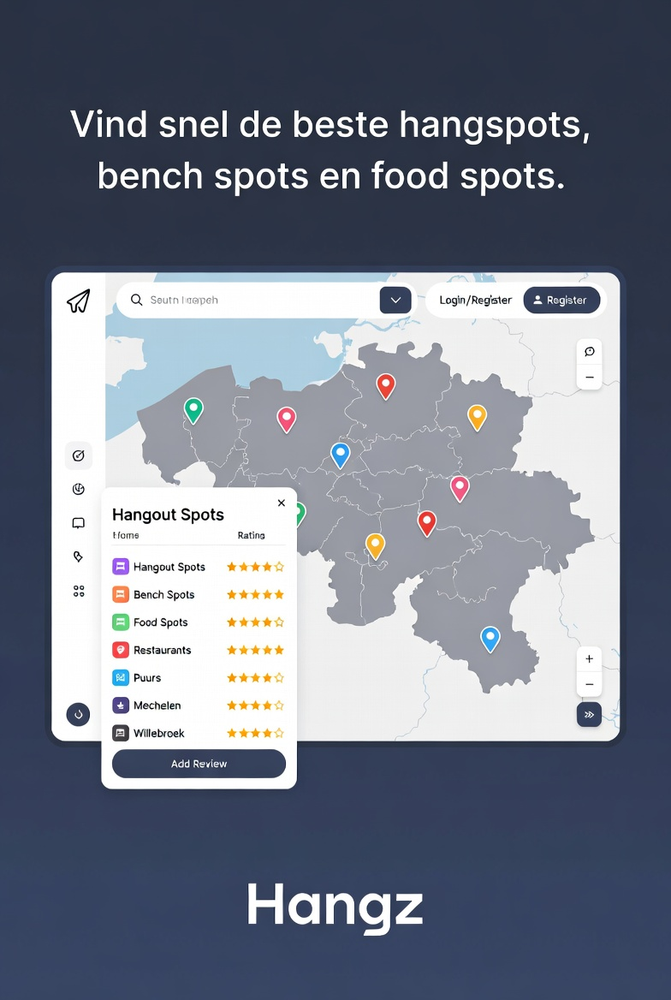

Probleemstelling
Doelstellingen
- Interactieve kaart met Leaflet
- Spots toevoegen en bekijken
- Reviews en ratings mogelijk maken
- Gebruiksvriendelijke webapplicatie bouwen
Technologie
- HTML & CSS
- JavaScript
- Leaflet
- Supabase
Foto’s / Screenshots
Screenshot van demo webapplicatie:
